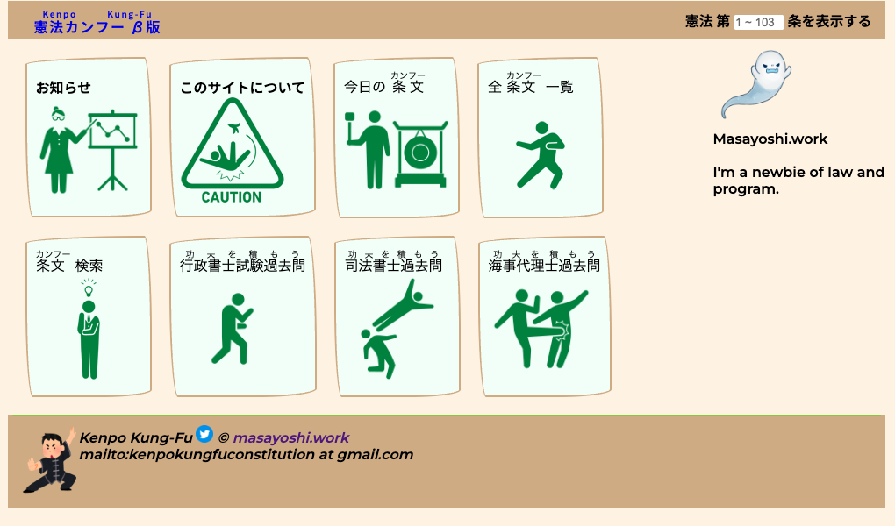
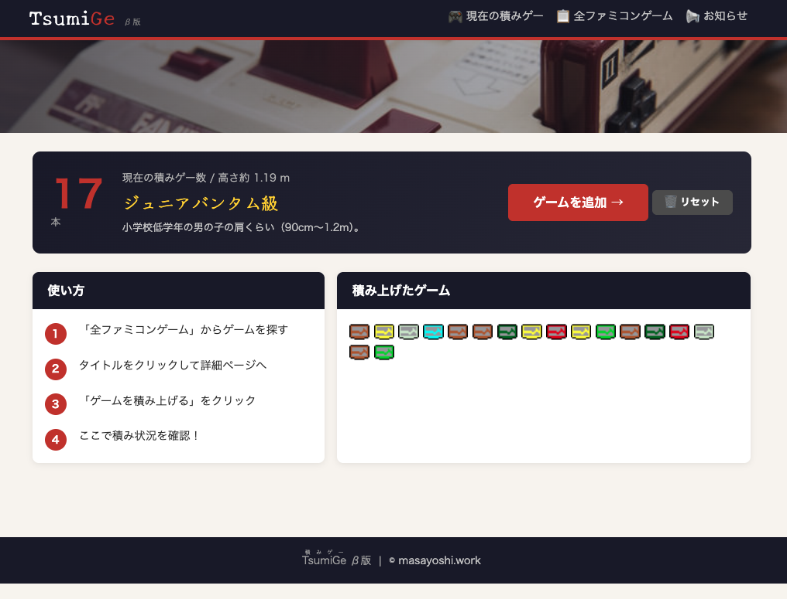
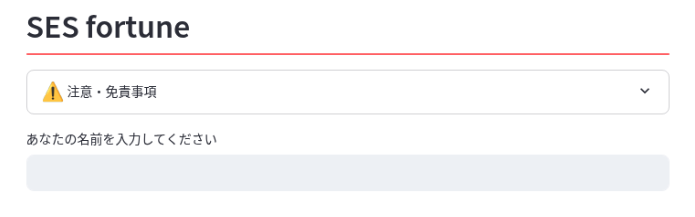
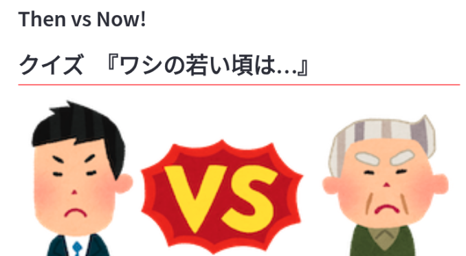

Engineer
大手SIer系でRHEL/Linuxのテクニカルサポートを約11年担当してきたエンジニアです。現在はServiceNowを中心に実装・テストを担当しており、インフラから開発まで幅広く対応できます。
Works を見る
大手SIer系でRHEL/Linuxのテクニカルサポートを約11年担当。
OS障害の一次〜三次対応、カーネル・ネットワーク・ストレージ周りのトラブルシュートを経験。
現在は ServiceNow を中心に、実装・テストを担当。複数プロジェクトへの助っ人参加や本番デプロイ作業も担うことが多い。
ServiceNow CSA 取得済み。カスタムアプリ開発から運用改善まで対応。
個人開発では Java / PHP(Laravel) / Python(Streamlit) を使ったWebアプリをいくつか公開中。
ITSM領域（ナレッジ管理・サービス要求管理）の実装・テスト、CSM領域（ケース管理）の詳細設計・実装・テストを担当。Zabbix・Microsoft Teams・ログ監視ツール等の外部システムとのインテグレーション経験あり。CSA取得済み。
大手SIer系でRHEL/Linuxのテクニカルサポートを約11年。OS障害の一次〜三次対応、カーネル・ネットワーク・ストレージのトラブルシュートが強み。
Java / PHP(Laravel) / Python(Streamlit) を使ったWebアプリ開発・公開。
個人開発・公開中のサービス

日本国憲法の条文と国家試験の過去問を紹介するWebサイト。憲法の条文をつぶやくTwitter Botも運用。
Visit →
ファミコンカセットを積み上げたときの高さを測るWebサービス。カセットアイコンも自作。
Visit →
SES案件の特徴を入力すると相性を診断するWebサービス。Python / Streamlit で開発・公開中。
Visit →
「昔と今」をテーマに、物価や出来事の変化をクイズ形式で楽しめるWebアプリ。Python / Streamlit で開発・公開中。
Visit →